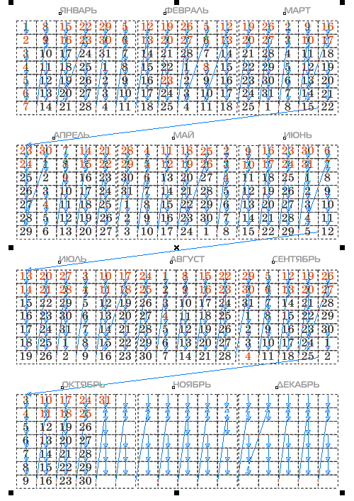
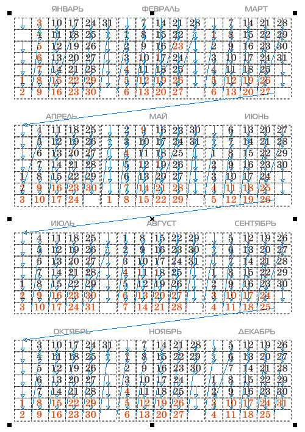

«ВЕЧНЫЙ» КАЛЕНДАРЬ
Тем дизайнерам, которые не хотят довольствоваться календарными сетками, получаемыми с помощью макроса или ещё откуда-то, а хотят создать свой оригинальный художественный или просто табель–календарь, предлагаю способ, который позволит Вам использовать Ваш календарь в качестве шаблона для создания аналогичного календаря и в последующие годы, причём с невероятной лёгкостью.
Чтобы из календаря текущего года сделать календарь на следующий, нужно всего лишь, выбрав инструмент Текст, поставить курсор перед числом 1 января и нажатием клавиши «Enter» «сдвинуть» все числа на одну ячейку вниз.Такой шаблон можно использовать и для создания других шаблонов табеля–календаря, организованного по другой схеме.
Конечно на создание первого варианта придётся затратить некоторое время, зато из созданного календаря календарь на следующий год можно будет получить буквально одним нажатием клавиши (не считая действий по «перекрашиванию» чисел, соответствующих выходным дням и случая с високосным годом).
Дело в том, что этот календарь представляет собой матрицу из чисел, которые Вы располагаете по любой нужной Вам схеме: месяцы расположены или по схеме 3 х 4, или 6 х 2, или все 12 месяцев в одну строку, или в два столбца, как угодно.
Каждое число занимает свою ячейку, как в таблице. Только каждая такая ячейка – это текстовая рамка, такая маленькая, что в каждой текстовой рамке помещается одно число. Все ячейки последовательно связаны между собой как связанные текстовые блоки. Размер шрифта должен быть подобран соответственно размеру ячейки: не должен быть слишком большим, чтобы число могло свободно поместиться в ячейке, и не должен быть слишком маленьким, чтобы в одной ячейке не могло поместиться два числа, обычно это примерно 50 – 70 % высоты ячейки.
Начиная создание календаря, определитесь с первоначальной схемой. Допустим, это будет блок, где месяцы организованы по схеме 3 х 4.
Прикиньте, какой понадобится размер ячейки. Это не маловажный момент, т.к. масштабировать календарь можно будет только переведя все числа в кривые. При этом все связи между числами будут утрачены и календарь перестанет быть шаблоном для последующих календарей.
Создайте одну ячейку (текстовый блок) и с помощью окна Преобразование дублируйте шесть раз со смещением вниз, с шагом, равным высоте ячейки. Получилась колонка для одной недели. Затем дублируйте всю группу из семи ячеек со смещением вправо, также с шагом, равным ширине ячейки пятнадцать раз. Получилась матрица для трёх месяцев. Выделите её и продублируйте три раза со смещением вниз, несколько большим, чем высота полученной матрицы, чтобы было место для названий месяцев. В случае другой схемы дублируйте недели столько раз, сколько нужно, чтобы получить матрицу, соответствующую вашей схеме.
Теперь заполним ячейки числами календаря (см. рисунок ниже).

Затем, набравшись немного терпения, свяжем последовательно все текстовые блоки–ячейки, включая свободные между числами соседних месяцев. Включение свободных ячеек между месяцами не лишнее, это позволит минимизировать переползание чисел одного месяца к числам другого, когда Вы будете использовать этот календарь–шаблон в будущем.
На рисунке ниже видно, как после связывания ячеек все числа переползли к началу матрицы.

Выбрав инструмент Текст, поставьте курсор перед 1 января, и нажатием «Enter» несколько раз поставьте число 1 января на соответствующее место (если 31 декабря нынешнего, 2010-го года приходится на пятницу, то 1 января следующего, 2011-го года должно быть субботой).
Затем, устанавливая курсор перед 1 числом каждого последующего месяца, и нажимая «Enter» подряд по 7 раз, сдвигаете каждый месяц на одну колонку правее. Нажатия можно делать достаточно быстро, не дожидаясь, когда все числа перестроятся полностью.
Добавьте названия месяцев, дни недели, само число года в отдельном слое, чтобы они пока не мешали.
Готовый календарь–шаблон показан на рисунке ниже.

На его примере рассмотрим создание на его основе следующего календаря на 2012 год. Не забудьте, что 2012 год – високосный.
Но для любого года переделка календаря начинается с того, что мы смотрим, каким днём недели оканчивается текущий год. В рассматриваемом примере 2011 год оканчивается субботой. Поэтому сначала устанавливаем 1 января на воскресенье.
Затем в феврале, после числа 28, в ячейку ниже надо будет добавить число 29 и нажатием клавиши «Enter» «столкнуть» все последующие числа на одну ячейку вниз. (Високосные годы те, у которых число в двух младших разрядах кратно 4, кроме годов, заканчивающихся на 100).
После подвижек чисел выделите сразу все числа и «перекрасьте» их в чёрный, затем, выделяя рамкой числа, соответствующие выходным, «перекрасьте» их в красный. В данном примере в рамку можно захватывать числа поквартально.
На рисунке ниже видно, как после добавления 29 февраля и сталкивания последующих чисел вниз на одну ячейку, числа последнего квартала сместились на колонку правее и пропало (вытеснилось) 31 декабря.

Поставив курсор в ячейку левее 1 октября, нажмите подряд 7 раз «Delete».
На рисунке ниже видно, что числа последних трёх месяцев «вернулись» на своё место.

После «перекрашивания» выходных и праздничных дней календарь на 2012 год готов.

Для улучшения вида можно чуть придвинуть колонки с одноразрядными числами к соседним, чтобы интервалы между колонками были примерно одинаковы. Лучше это делать не с шаблоном, а сохранить в другой файл и перевести числа в кривые.
При желании «перекроить» календарь-шаблон по другой схеме, группируйте числа одного месяца, вместе с названием месяца, и перетаскивайте на новое место.

Специально для cdrpro.ru
Копирование урока или части его и публикация любым способом без письменного согласия автора запрещены.

В сотни раз удобнее можно выполнить самую трудоёмкую процедуру связывания ячеек, если вы покопаетесь в недрах окна Параметры и извлечёте команду Связь,
которая позволит объединить все ячейки одним нажатием.
Однако, чтобы всё было действительно быстро и удобно, всё должно быть точно.
А точным в данном случае должен быть порядок ячеек в структуре слоёв (в диспетчере объектов): первая ячейка – в самом низу, последняя – на самом верху.
Собственно, этот порядок в сруктуре слоёв соответствует порядку, в котором создаются объекты.
Чтобы в структуре слоёв получился нужный порядок ячеек, перед тем, как дублировать первые созданные семь ячеек, сгруппируйте их. В дальнейшем всякий раз группируйте то, что будете дублировать.
Перед тем как выполнить команду Связь не забудьте выполнить команду Отменить группировку полностью.
На рисунке ниже видно, что первая неделя (выделенные ячейки) расположены в диспетчере объектов ниже других.
Не могу утверждать, что такой же выигрыш (в сотни раз) получается по времени. Процесс связывания такого количества ячеек длится ок. 3 мин. Но всё же это лучше, чем всё это проделывать вручную.
К сожалению Х3-версия не убедила меня, что порядок связывания ячеек определяется однозначно. В Х4 -и Х5-версиях всё нормально.
Да, помоему проще пользоваться генератором. Надавил одну кнопку и готово. Не надо выстраивать шаблоны и замарачиваться.
интересный способ, в основном пользовался генератором и даже не предполагал что можно так, спасибо, думаю что этот урок заслуживает внимания)))
firgof, спасибо.
Кстати, всегда интересно было — нет ли возможности сохранить эти пресеты так, чтобы можно было ими воспользоваться и после переустановки CorelDraw или даже Windows. Чтобы была возможность переносить их с машины на машину.
Где-то же они хранятся. Какие-то файлы? Реестр?
А способ этот стар, как мир! Еще во времена QuarkXPress 1-4 (90-е годы), пока он не поддерживал таблицы, так делались в нем календарные сетки.
Спасибо, что напомнили! Действительно, иногда такой способ может пригодиться.
А еще делали так:
Один месяц — один фрейм (text box). В месяце — 6 столбцов. У фрейма делается 6 колонок. Средник тоже задается, как нужно. И заполняем. Для следующего месяца (года) необходимо просто сдвинуть начало месяца вниз или вверх, нажав, соответственно, Enter или Backspace нужное количество раз.
Этим способом и в CorelDraw'е пользовались в старые времена, когда еще не шел в комплекте генератор календарей.
Solowejka, почитал ваши уроки и советы. Мне импонирует ваша преданность CorelDraw'у и желание разбираться в нем до бесконечности. А также умение сделать в нем все, даже сложную верстку. Очень пригодятся многим ваши советы, хотя молодые и начинающие предпочитают "нажать кнопку" и получить результат. Или накачать из Интернета взломанных программ и верстать в них. Никто не спорит, что InDesign — мощная вещь, но не всегда он есть, не всегда он куплен, не всегда есть возможность верстать в нем. А есть только Corel GS. И нужно в ней сделать всё.
Спасибо...
Кстати, нормальный макрос, рисующий в кореле карманные календари в приложении.
Цифры в фигурном тексте - можно быстро исправить на другой шрифт. Очень удобно
Прикольная вещь! :)
По функционалу несравнимо, конечно, с макросом от Вакуленко, но, если нужно быстро создать карманный календарик, то вполне можно использовать...
Страницы